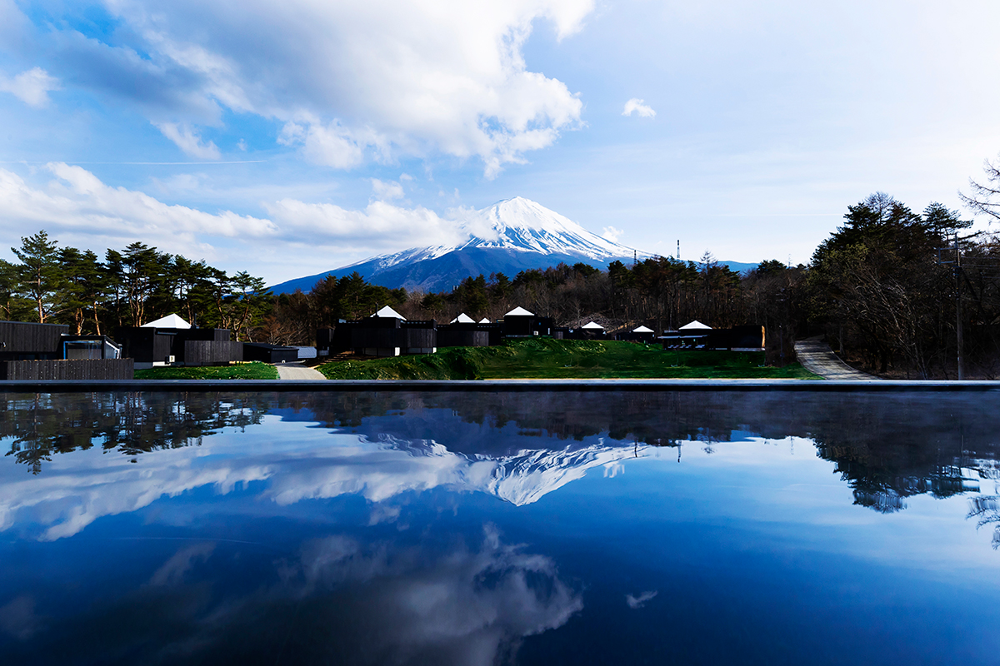
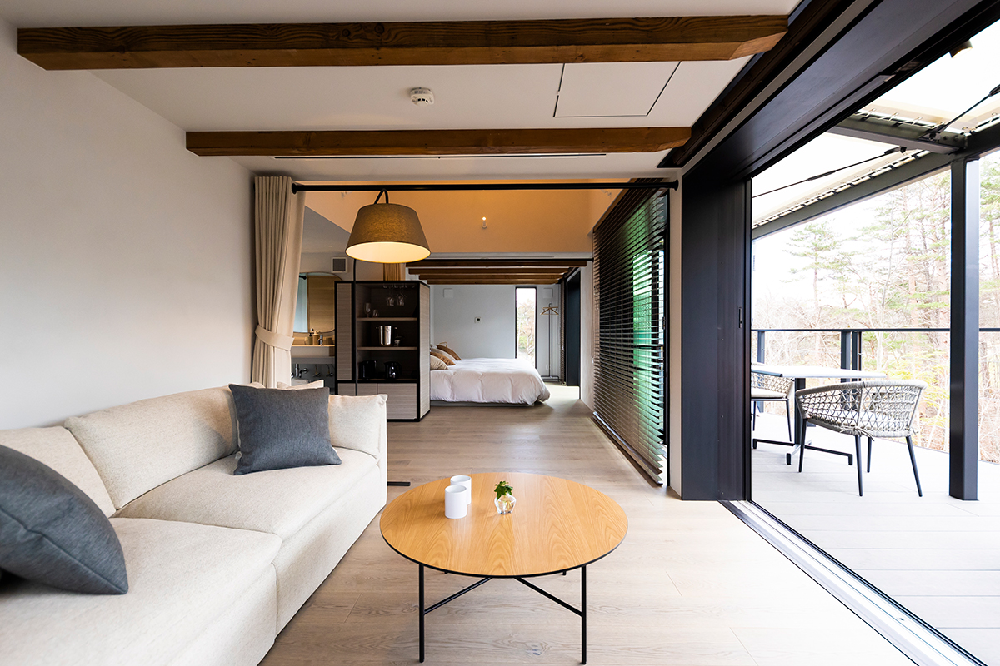
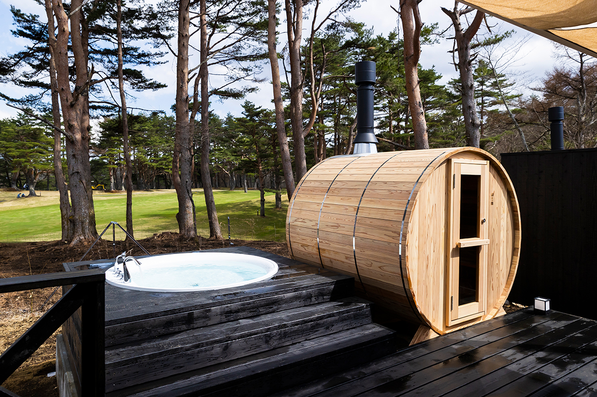

Префектура Яманаси · Нарусава · где остановиться
THE SENSE FUJI: виллы с онсэном и сауной у подножия Фудзи

THE SENSE FUJI построен так, чтобы природу у подножия Фудзи можно было почувствовать всеми органами чувств. Здесь всего 15 номеров, и каждый занимает отдельную виллу с собственным онсэном и террасой.
Виллы
Свой дом у горы
THE SENSE FUJI стоит в деревне Нарусава, на северном подножии Фудзи, и задуман как место, где гость словно растворяется в окружающей природе. Все номера здесь отдельные виллы. В каждой есть внутренняя ванна с природной водой онсэна и терраса, а заселиться и выехать можно, не выходя из своей виллы. Чужие взгляды сюда не попадают, и отдых получается по-настоящему спокойным.

Вокруг лежат зелёные просторы, похожие на старую японскую деревню, и ничто не закрывает вид на Фудзи. Рядом находится известный гольф-клуб «Фудзи Лейксайд Кантри». Можно сыграть раунд с видом на гору, а потом снять усталость в сауне и в горячей воде онсэна.

Кухня
Ужин на террасе
Время на открытой террасе под свежим ветром, пожалуй, лучшее, что здесь есть. Там же подают ужин и завтрак. На ужин выбирают между западным курсом с мясом на гриле и японским курсом с горячим котелком набэ. Овощей и фруктов из Яманаси в меню много, а мясо готовят просто и сытно, по-походному. В 2023 году ночь с ужином и завтраком стоила от 95 000 иен с налогом и сервисным сбором.
THE SENSE FUJI
- Адрес
- префектура Яманаси, уезд Минамицуру, деревня Нарусава, Фудзисан, 8545-5
- Телефон
- +81 120-22-7774
- Номера
- 15 вилл; сауна, онсэн
- Заезд / выезд
- 15:00 / 11:00
- Цены / Вход
- от 95 000 иен за ночь с ужином и завтраком, с налогом и сервисным сбором
- Как добраться
- на машине около 15 минут от съезда Кавагутико скоростной дороги Тюо; от станции Кавагутико линии Фудзикю около 18 минут на такси
- Сайт
- thesense.jp/fuji